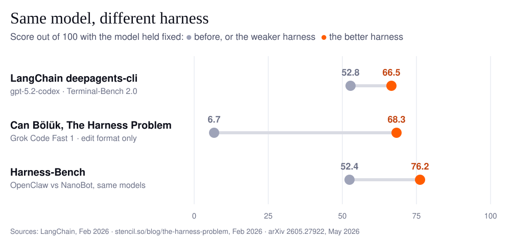
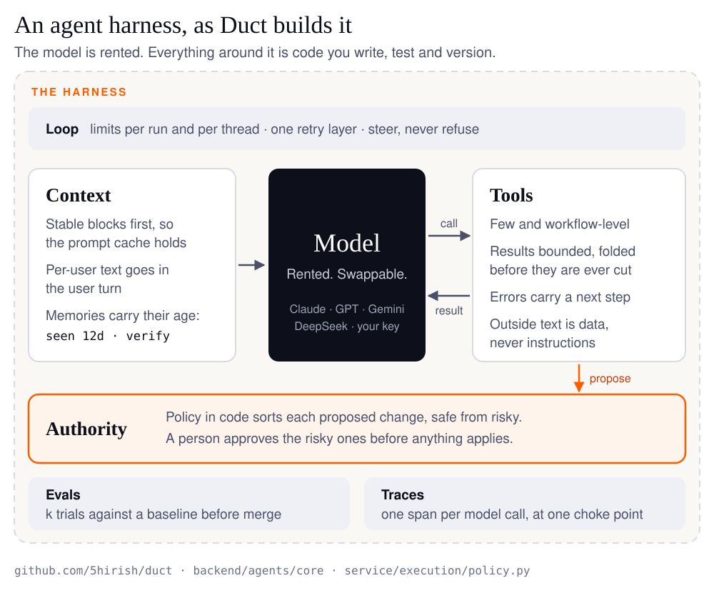
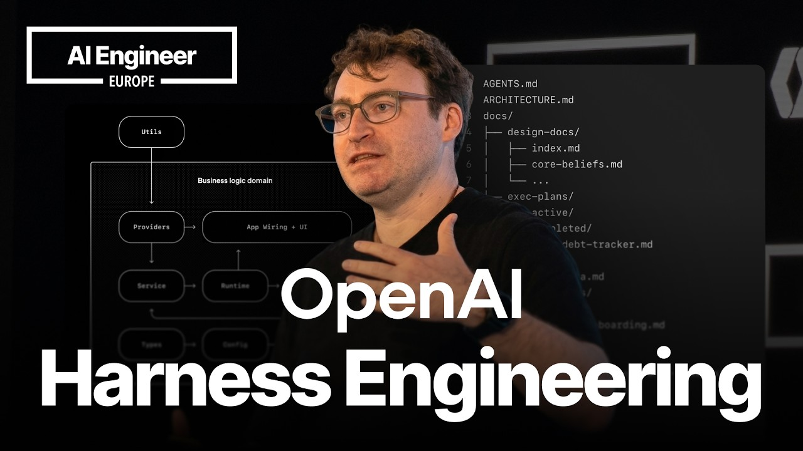
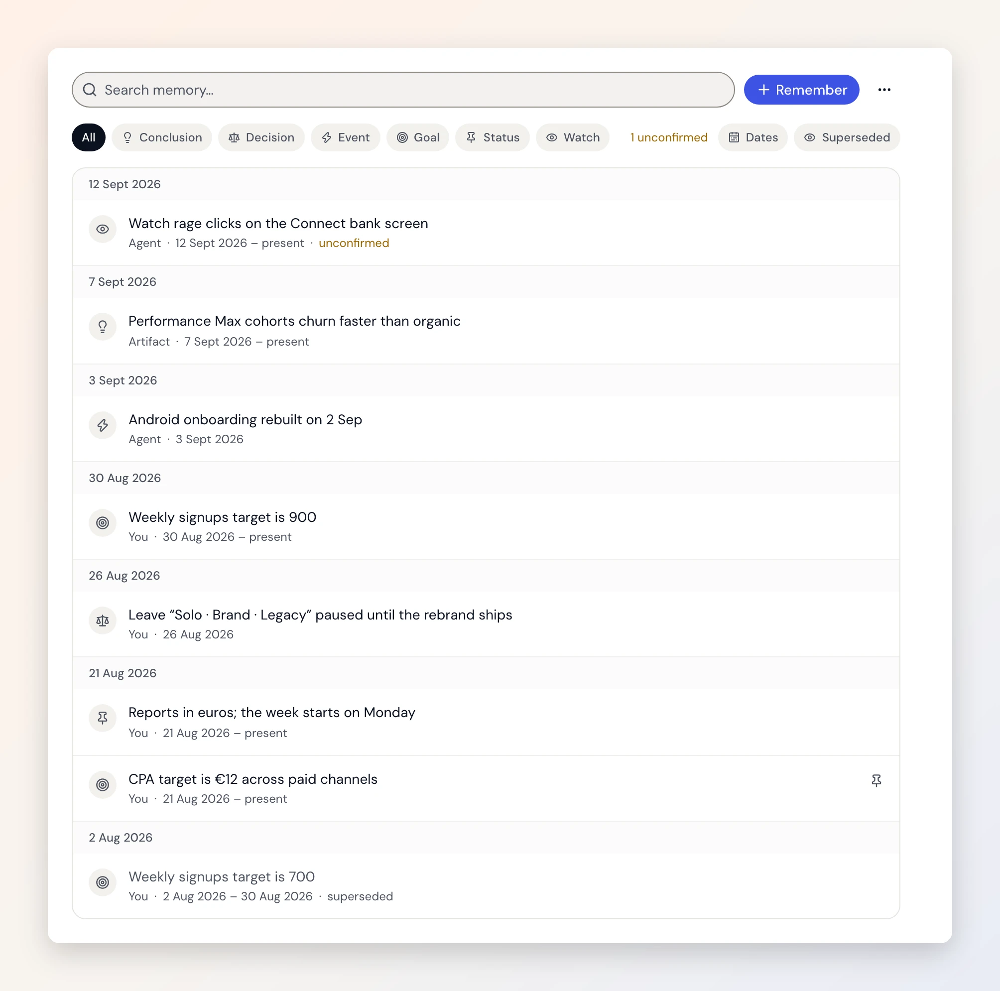

Harness engineering is the work of building everything around a language model that turns it into a dependable agent: the loop that runs it, the tools it calls, what goes into its context, what it remembers, who approves what it does, and the evals and traces that tell you whether a change helped. The model is rented. The harness is the part you own, test and version.
On September 27 we read ai-boost/awesome-harness-engineering, the most-starred awesome list on the subject, against the agent inside Duct. Duct is an open-source agent that reads a team's Search Console, GA4, ads and billing data together and proposes changes a person approves. The reading took a day. What it found took another: two bugs and three design changes, all merged on September 28.
This post is what is in the list, what to read first, where the list is wrong, and what an agent that acts on live business systems adds to a literature written almost entirely about coding agents.
Where did the term "harness engineering" come from?
Mitchell Hashimoto named it on February 5, 2026, describing a habit rather than a discipline:
I've grown to calling this "harness engineering." It is the idea that anytime you find an agent makes a mistake, you take the time to engineer a solution such that the agent never makes that mistake again.
Six days later OpenAI published Harness engineering: leveraging Codex in an agent-first world, Ryan Lopopolo's account of a team that started with three engineers and shipped about a million lines of code in five months without writing any of it by hand. LangChain followed on February 17 with Improving Deep Agents with harness engineering. Wikipedia's Agent harness article says attribution of the phrase is contested. What is not contested is that by spring every lab was using it.
The shortest definition is LangChain's, from The Anatomy of an Agent Harness: Agent = Model + Harness. "If you're not the model, you're the harness."
Why does the harness matter as much as the model?
Because the same model scores very differently in different harnesses, and the best-documented quality drop of 2026, in Claude Code, came from harness changes rather than the model.

The evidence, all measured with the model held fixed:
| Source | Model | What changed | Result |
|---|---|---|---|
| LangChain, deepagents-cli on Terminal-Bench 2.0 | gpt-5.2-codex | the harness only | 52.8% to 66.5% |
| Can Bölük, The Harness Problem | Grok Code Fast 1 | the edit format only | 6.7% to 68.3% |
| Harness-Bench, arXiv 2605.27922 | the same model pool and tasks | NanoBot vs OpenClaw | 76.2 vs 52.4 |
| Anthropic, Claude Code postmortem | Opus 4.6 and 4.7 | one system-prompt line limiting response length | a 3% drop on one eval |
| Anthropic, infrastructure noise | the same model | container resources only | 6 points on Terminal-Bench 2.0 |
Anthropic puts the consequence plainly in Demystifying evals for AI agents: "When we evaluate "an agent," we're evaluating the harness and the model working together." Harness-Bench goes further and asks that capability be reported per model-harness configuration, not per model.
There is a serious counterpoint. Dex Horthy's Why Software Factories Fail, which reached 394 points on Hacker News in July, argues that "no amount of harness engineering or loopsmaxxing can solve what is fundamentally a model-training issue": models are rewarded for passing tests, not for code a team can maintain. We agree with the conclusion. A harness raises the floor; it does not replace review. That is why Duct's harness ends with a person: by default every change waits for approval, and anything destructive or live waits at every autonomy level.

What is in awesome-harness-engineering?
An index of about 480 links, organized by the problem each one solves rather than by vendor. It was created on March 29, 2026, had 4,560 stars on September 28, is released under CC0, and is maintained almost entirely by its author: the repository has merged two outside pull requests in its history, and new entries mostly arrive through the maintainer's own commits.
| Section | Links | Read it for |
|---|---|---|
| Foundations | 32 | the canonical posts from OpenAI, Anthropic, LangChain and Martin Fowler's site |
| Design primitives | 266 | twelve problems: loop, planning, context, tools, skills and MCP, permissions, memory, orchestration, verification, observability, debugging, human-in-the-loop |
| Reference implementations | 89 | tutorials, meta-harnesses and open agents whose code you can read |
| Security, sandbox and permissions | 45 | isolating what an agent can touch |
| Evals and verification | 21 | knowing whether a change helped |
| Production infrastructure | 22 | running agents as a service |
| Templates | 4 | starting points for AGENTS.md, a plan, an implementation log and a harness checklist |
The structure is the list's best feature. When an agent forgets, you open Memory & State; when a regression slips through, Verification. Nobody needs to read all of it.
What to read first
If you read nine things, read these, in this order:
- Harness engineering: leveraging Codex in an agent-first world (OpenAI). The founding case study, and the most repeated advice in the field: "give Codex a map, not a 1,000-page instruction manual".
- Effective harnesses for long-running agents (Anthropic). An initializer agent, a progress file and a feature list, so each new session picks up where the last one stopped.
- Harness design for long-running application development (Anthropic). Planner, generator and evaluator agents, and the sentence we quote most: "every component in a harness encodes an assumption about what the model can't do on its own".
- The Anatomy of an Agent Harness (LangChain). The vocabulary, and a warning that post-training on one harness overfits a model to it.
- Harness engineering for coding agent users (Birgitta Böckeler). Guides that steer before the agent acts, sensors that check after, and which checks should be code rather than another model.
- Demystifying evals for AI agents (Anthropic). Tasks, trials and graders, and why a capability eval should graduate into a regression suite.
- An update on recent Claude Code quality reports (Anthropic). Three harness changes, not a model change, behind a quality drop users noticed.
- Quantifying infrastructure noise in agentic coding evals (Anthropic). Your noise floor, before you believe any delta.
- Harness engineering for self-improvement (Lilian Weng). The survey, with a ladder from prompts to context to workflow to harness code to optimizer code.
If you would rather watch than read, Lopopolo's talk is the OpenAI post in his own words, with the questions a room of engineers asked about it:

Harness Engineering: How to Build Software When Humans Steer, Agents Execute. Ryan Lopopolo, OpenAI, at AI Engineer (46 min)YouTube · plays here when you press playWhich harness engineering list should you use?
| Resource | Stars | What it is | Use it when |
|---|---|---|---|
| ai-boost/awesome-harness-engineering | 4,560 | about 480 links by problem | you have a specific problem to solve |
| walkinglabs/awesome-harness-engineering | 4,182 | a shorter list of tools and guides | you want less to scan |
| walkinglabs/learn-harness-engineering | 16.5k | a beginner course | you are starting from zero |
| lopopolo/harness-engineering | 2,705 | an anthology by the OpenAI post's author | you want the OpenAI view in full |
Stars as of September 28, 2026.
What does the list get wrong?
Little, but its one-line summaries are an editor's, and a few are wrong. When we indexed it for our own engineering docs, we wrote down the rule that follows: mine it for sources, then read the primary one, because some summaries run ahead of what the source measured. Four entries, checked on September 28:
- Two Anthropic links return 404. Writing Effective Tools for Agents has moved to Writing effective tools for agents, with agents. Beyond Permission Prompts is now Claude Code sandboxing, and it is about filesystem and network isolation, not the "structured permission systems" the list describes.
- One claim is not in its source. The entry for Anthropic's 2026 Agentic Coding Trends Report says harness setup alone "can swing benchmarks by 5+ percentage points". The report mentions neither percentages nor benchmarks, and uses "harness" only as a verb. The nearest real figure is the infrastructure-noise post's 6 points, which is about container resources.
- One entry is a duplicate. The older Fowler URL now redirects to the same article as the newer one.
Missing entirely, and worth adding: Hashimoto's post, Bölük's The Harness Problem, HumanLayer's 12-Factor Agents, Manus's Context Engineering for AI Agents, and two 2026 papers we cite below: the AGENTS.md evaluation and TEPA.
The bigger gap is scope. Nearly every benchmark and case study in the list is a coding agent, where the environment is a repository and the verifier is a test suite. That is not the only kind of agent.
What did reading it change in Duct?
Two bugs fixed and three design changes, merged the next day, plus a rulebook that ties each harness rule to the test that enforces it. Reading a list against your own code is an audit with a free checklist. What it found:
- A graph assembled by hand missed the shared middleware. Our audit agent ran without the run limits, retry reporting and prompt caching every other agent had. Now every session graph is built in one place, and a test fails one built anywhere else (#235).
- A process that died left its runs "running" forever. They are now cancelled at the next boot (#236).
- Memory now says how old a remembered state is. A remembered "campaign enabled" used to render as its start date followed by "present", so a 90-day-old state read like this morning's. Now the model sees
seen · 90d · verifyand re-reads the source before asserting it (#237). - Duct does the arithmetic, not the model. Replaying a real brief, the model reasoned correctly and then added wrong: 2,504 sessions where the rows summed to 2,681. Totals, rates and subtotals are now computed on the server and handed to the model (#238).
- Harness changes are gated by evals. A prompt, model default or middleware change now runs k trials against a baseline on synthetic accounts before it merges. Binary checks gate; scores are only logged. A full trial costs $0.03 on DeepSeek V4 Pro through OpenRouter, which is what makes running it on every pull request affordable (#239).
The rules that came out of it live in one rulebook, organized by the list's own sections, and each names what enforces it:
| The list's section | Duct's rule | Enforced by |
|---|---|---|
| Agent loop | Every agent declares limits per run and per thread; retries happen in one layer that reports each attempt | test_deep_session.py |
| Context delivery | Stable blocks first, per-user text in the user turn, so the prompt cache holds | test_turn.py |
| Tool design | An error is a result with a code and a next step, never a raw exception | test_agent_errors.py |
| Memory and state | A remembered state is a dated claim: show its age, re-read it before asserting it | test_memory_retrieval.py |
| Permissions, human-in-the-loop | Authority lives in code; no agent has an approve or apply tool | test_execution_policy.py |
| Orchestration | Every session graph is built in one place, with the same middleware | test_agent_assembly.py |
| Evals | A harness change runs k trials against a baseline before merge | tests/eval/gate.py |
| Observability | One span per model call at one choke point; per-tool spans are still an open gap | agents/core/lc.py |
The last row is deliberate. A rulebook that lists only what works is marketing; ours ranks its open gaps by the failure each would prevent.
What does an agent that acts on live systems add?
When the environment is a live ad account instead of a repository, there is no test suite and no sandbox copy. Four things change, and the list barely covers any of them.
There is no pytest for an ad account
A coding agent's work is verified by running the tests. Nothing verifies a keyword added to a Google Ads campaign until money has been spent on it. So the verifier becomes three things: a policy in code that sorts changes by risk, a person who approves (every change by default, and anything destructive or live at every level), and a rollback. In Duct every change is a staged change set that moves through propose, approve, apply and roll back, and the rules live in one policy file, not in the prompt. The list's Human-in-the-Loop section has 12 entries, almost all approval prompts. None is about undo.
Memory has to know when it stopped being true
Business data drifts weekly: budgets change, campaigns pause, pages redirect. The TEPA paper measured what happens when remembered facts are reversed: append-only memory scored 0.210, no memory at all 0.309, and memory that revokes stale entries 0.950. An agent that remembers naively is worse than one that remembers nothing. Duct keeps when each fact held, shows its age, and re-reads the source before stating an old one as current.

Harness quality matters most on cheap models
Three sources point the same way. Harness-Bench found stronger models vary less across harnesses. Bölük's weakest models gained the most from a better edit format. And LangChain's Nemotron 3 Ultra playbook tuned an open model's harness to a best run of 0.86 against Opus 4.8's 0.87, at about $4.48 per suite against $43.48. For anyone routing work to cheaper tiers, as Duct does with heavy, standard and light models, the harness is a unit-economics lever: the cheaper the model, the more the harness and its evals decide the result.
A rule in AGENTS.md is a wish; a test is a rule
A study of 481 public CLAUDE.md files (arXiv 2608.23550) found that only about 4 to 16% of the security rules written in them had a matching built-in control. An ETH study of repository context files (arXiv 2602.11988) found they "do not generally improve task success rates" while raising inference cost by over 20%. Duct's own AGENTS.md names each non-negotiable together with the test that fails when it breaks, and the doctrine page links every opinion to the file that enforces it.
How do you start harness engineering on your own agent?
Start from your agent's failures, not from a framework. Seven steps, in the order they paid off for us:
- Keep a failure log, and turn every repeat into code: a tool, a check or a test. A prompt line is the last resort, not the first.
- Next to each harness component, write the failure it compensates for. When the model changes, re-test those assumptions and delete what the new model no longer needs.
- Put authority in code. The agent proposes; a policy decides what needs a person; nothing destructive or live applies on the model's say-so.
- Bound every tool result and make every error actionable. Fold large results losslessly before cutting them, and return errors that say what to try next.
- Put stable text first and per-user text last. Manus calls the KV-cache hit rate "the single most important metric for a production-stage AI agent"; ordering is most of it.
- Gate harness changes with evals. Run k trials against a baseline, gate on binary checks, and ignore deltas smaller than your noise floor.
- Trace every model call and tool call at one choke point. The OpenTelemetry GenAI conventions are the standard; we read ours in Arize Phoenix.
The whole of Duct's harness, the rules and the tests that hold them are open source, so every step above has a working example you can read.
FAQ
What is an agent harness?
An agent harness is the software around a language model that makes it an agent: the loop that calls the model, the tools and their schemas, context assembly and compaction, memory, permissions and approvals, retries and limits, and the traces and evals around all of it. Claude Code and Codex CLI are harnesses. So is the agent inside Duct.
Is harness engineering the same as context engineering?
They overlap, and people draw the line differently. Context engineering decides what the model sees on each call. Birgitta Böckeler calls engineering a coding agent's user harness "a specific form of context engineering". We draw it the other way: context is one layer of the harness, which also holds the loop, tools, permissions, evals and traces.
What is the difference between harness engineering and loop engineering?
Harness engineering shapes the environment a single agent run happens in. Loop engineering, in Addy Osmani's words, "is replacing yourself as the person who prompts the agent": designing the outer system that decides what runs next, when, and on what. A loop is only as reliable as the harness each of its runs uses.
How is harness engineering different from spec-driven development?
Spec-driven development means writing a specification before asking an AI to write code, so it is about the input to one task. Harness engineering is about the system that executes every task. They combine well: a good spec is one of the guides a harness gives the agent before it acts.
Do AGENTS.md files make coding agents better?
Not by themselves. An ETH study found repository context files did not generally improve task success and raised inference cost by over 20%. Keep AGENTS.md short, a map rather than a manual, as OpenAI puts it, and move any rule that matters into a test or a tool that enforces it.